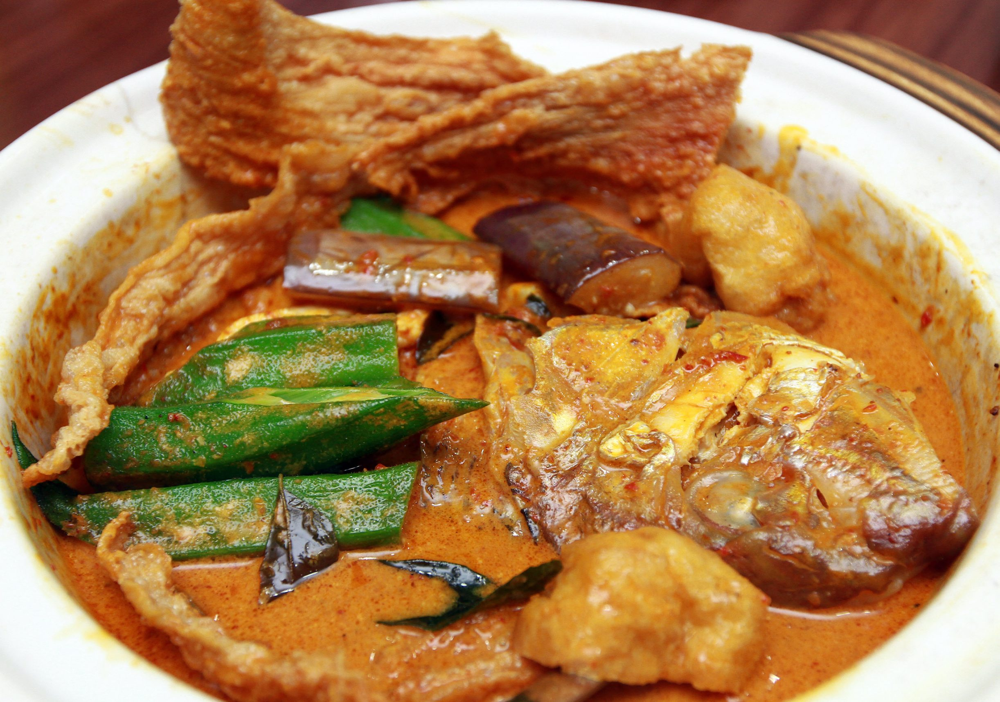

Fish Head Curry

Description
Fish head curry is a Singaporean dish deriving from a hybrid of Indian and Chinese ethnic cuisines. The head of a red snapper is stewed in a curry with assorted vegetables such as okra and eggplants. It is usually served with either rice or bread, or as a shared dish.
Ingredients
- Fish head
- Ginger
- Coriander Leaves
- Fenugreek seeds
- Curry leaves
- Chopped onion
- Chopped garlic
- Chilli powder
- Coriander powder
- Cumin powder
- Turmeric powder
- Black pepper powder
- Fish curry masala powder
- Tamarind (Assam) pulp (soaked in 1 Tbsp water)
- Chopped tomato
- Lemongrass, bruised
- Ginger, sliced into rounds
- Ladies fingers(tender ones), chopped
- Eggplants, quartered
- Long red chilli, sliced
- Thick coconut cream
- Salt
- Oil
Steps
- Rinse the fish head thoroughly.
- Using a mortar and pestle, crush the ginger well.
- Rub the fish thoroughly with this crushed ginger, and a good sprinkling of salt.
- Sprinkle coriander leaves over the fish.
- Place on a steamer rack (above boiling water) and steam covered for 15 minutes.
- Heat oil in a wide carbon steel wok or an earthen pot.
- Add the fenugreek seeds and curry leaves. Allow to crackle.
- Add the chopped garlic and as soon as soft, add the chopped onion.
- Stir, and cook till the onions are soft and lightly golden - do not allow them to go brown.
- Now, add all the spice powders (chilli powder, coriander powder, cumin powder, turmeric powder, fish curry powder and pepper powder)
- Stir and cook, adding a sprinkling of water so that the spices do not burn.
- Cook till the raw smell of the spices is gone.
- Add two and a half cups of water. (Do not be tempted to add too much water.)
- Bring to boil.
- Add salt, tamarind solution, chopped tomato, lemongrass and sliced ginger.
- Add the chopped okra to a hot pand with some oil and toss very briefly, just till they have turned bright green in color.
- When the curry has simmered briefly, add the chopped vegetables (ladies fingers and eggplants). Also, add the red chilli.
- Add coconut cream and cook on low till simmered.
- Now gently add the steamed fish head. Coat the fish head well in the curry.
- Cover and cook on low heat for 5-8 minutes. Do not stir the curry or the fish head might come apart, instead swirl the pot when needed. If you have over steamed the fish initially this cooking time must be reduced).
- After the curry has rested a while, you may choose to remove the bruised lemongrass - so that the aroma does not become too strong. I prefer to do so.
- When it's time to serve, bring to boil again. If using an earthen pot, it will continue to boil. Bring to the serving table while still simmering.
- You can also use a tabletop wax stove to serve the curry simmering!
- Serve with steamed white rice. Yummy!
Back